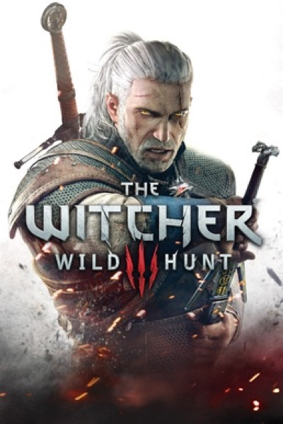

RPG · 2015
The Witcher 3: Wild Hunt
Side quests written like short stories; the new bar for open-world writing.

Cover: Wikipedia: The Witcher 3: Wild Hunt
Facts
- Released
- 2015-05-19
- Genre
- RPG
- Category
- RPG
- Platforms
- Nintendo, PC, PlayStation, Xbox
- Developers
- CD Projekt RED
- Publishers
- CD Projekt RED, Namco, Warner Bros. Games, cdp.pl
PC requirements
- Minimum
- [object Object]
- Recommended
- [object Object]